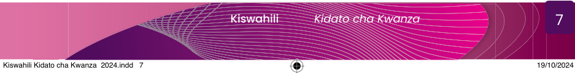

mazungumzo miongoni mwa wanajamii. Kuna baadhi ya maneno ambayo huwezi kuyatamka waziwazi. Pia, katika lugha yetu ya Kiswahili kuna utajiri huo wa kiutamaduni. Hivyo, katika mila na desturi zetu, hatutamki baadhi ya maneno waziwazi. Kwa mfano, mwanamke anapopata mtoto hatusemi amezaa mtoto badala yake tunasema amejifungua. Vilevile, mtu anapokwenda chooni, badala ya kusema kile anachotaka kwenda kufanya huko anasema ninakwenda kujisaidia au ninakwenda haja.
Bibi, maneno hayo yalitamkwa kwa kificho tangu zamani?
Ndiyo mjukuu wangu. Mila na desturi zinarithishwa kutoka kizazi kimoja kwenda kingine. Kiswahili kimesheheni maneno hayo ya kificho ambayo hujulikana kama tafsida.
Ahaaa! Sasa nimeelewa.
Bibi, hivi mtu akiumwa au kupatwa na matatizo tunatakiwa tufanyeje?
Swali zuri mjukuu wangu. Kwa hakika, tunapaswa kuishi kwa kujaliana na kufarijiana. Kujaliana na kufarijiana huonesha hali ya kuthaminiana. Kwa mfano, mtu anapougua au kupata changamoto yoyote ile katika jamii yetu, lugha yetu ina maneno kama vile pole ambayo hutumika katika kumfariji. Pia, katika kuonesha kujaliana, maneno kama asante na shukurani hutumika pale mtu anapokupa kitu au msaada fulani. Aidha, unapotaka kuomba kitu au msaada fulani sharti kutumia maneno yanayoonesha upole. Maneno hayo ni pamoja na samahani, tafadhali, ninaomba na mengine yanayofanana na hayo.
Kwa kweli leo nimejifunza mambo mengi kuhusu utamaduni wetu, hususani kuhusu maadili. Ninatamani uendelee kutueleza mengine zaidi.
Safi! Ngoja niwajuze mengine wajukuu zangu. Katika maisha ni muhimu kusaidiana. Ikitokea mdogo amekutana na mkubwa akiwa na mzigo, mdogo anapaswa kumsaidia mkubwa kubeba mzigo huo. Hata hivyo, si wadogo tu wanaotakiwa kuwasaidia wengine; hata watu wazima husaidiana. Hii ni alama ya ukarimu. Ukarimu ni sifa muhimu sana kwa kila Mtanzania.
